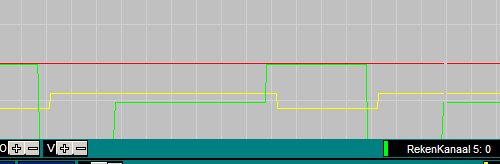
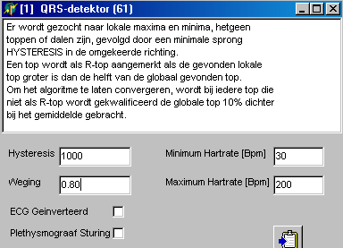
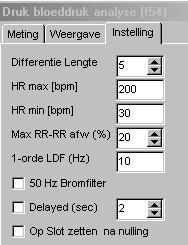

Demo Zwangerschap
TestOrganizer

Midac
Ingangssignalen & Kalibratie
|
Kalibratie als Modificatie 1 = versterking van de voorversterkers 5* verhoogd (1kOhm --> 210 Ohm) en Modificatie 2 = Brugspanning door LDO (3.3V --> 3V) Dit geldt niet voor de onveilige kanalen 9 t/m 13 !!! |
||
|
Signaal |
Kalibratie |
Opmerkingen |
|
1 = Druk |
80 / 113 / 140 / 194 |
Nulling meestal nodig BloodPressure analyse met F54 |
|
2 = ECG(mV) |
-3 / -331 / 0 / -44.8 / 1 |
laatste getal is de AC-koppeling (1 sec, is veel beter dan 10sec !!) R-top detectie met F61 |
|
3 = Plet Links |
0 / 0 / 1 / 19 |
|
|
4 = |
|
|
Onveilige signalen
|
5 = FinaPres |
0 / 148 / 200 / 2196 |
aangesloten via 20* verzwakker 100 mmHg = 1 V |
|
6 |
|
|
|
7 = RapidCuff |
0 / -17.9 / 100 / 1071 |
100 mmHg = 100 mV |
|
8 = |
|
|
|
9 = Digital Bits |
0 / -5 / 4095 / 5 |
|
Signaal analyse en protocollen
|
ECG analyse R-top detectie middels F61. Als ingangssignalen dienen 1 = ECG 2 = voorlopig sys.signal = true (bedoeld voor cuff detectie, kan pas goed worden ingesteld nadat een opname met cuffdruk en pletbit is gemaakt).
De weging is verhoogd van 0.03 naar 0.8, waardoor de lage afsnijfrekwentie verhoogd wordt van 0.25 Hz naar 7 Hz. Hierdoor worden bij een "slecht" ECG-signaal minder vaak P- en T-toppen als R-top aangezien.
De hysteresis is verhoogd van 50 naar 1000, omdat de signalen veel groter zijn dan bij de voorlopers van de FysioFlex. Deze moet misschien nog wel verhoogd worden naar 5000 ???? |
 |
|
Bloeddruk analyse Voor zowel Finapres als inter-arteriele druk wordt functie 54 gebruikt met dezelfde instellingen. De standaard instellingen, zoals hiernaasr weergeven voldoen goed. |
 |
Schermopbouw
typisch opbouw voor plet opname
Rekenfunkties
De rekenfunkties zijn tot een minimiem beperkt gehouden, bovendien zijn de basale rekenfunckties bovenaan geplaatst.
R1 = F61, afleiden van R-top en Hr(R5) uit ECG
R2 = F54, analyse bloeddruk signaal op basis van de inter-arteriële druk